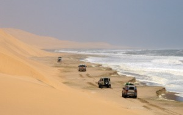

- Kevin Allister Maischatz
- Home
- Experience
- Hobbies

Hello, I am Kevin.
My home is Walvis Bay, Namibia .
My home is Walvis Bay, Namibia .
I've recently started with my future in website development, I am someone who loves outdoors and loves the adventure of discovering new things in life, such as quad biking in the dunes or going out camping for the weekend though I am also interested in the technology world such as, gaming and developing (coding), it is going to be very fun to start a new chapter in my life.
I have recently come out of school, wanting to persue my career in website development, my usual hobbies would be going to the gym, taking my quadbike out for a drive in the dunes, fishing along the coast or playing games on my computer which I have done semi-professional for some time.
I would like to begin and continue my skill being a website developer, first starting with front end development then after being well familiar and completing my course, move onto full stack website development and expand my knowledge to better my future in being a software engineer. These are the languages I would like to expand my knowledge with;
My idea would be to be able to work remotley so I can work comfortable and easy with having the free mind of space of being able to have my own schedule.